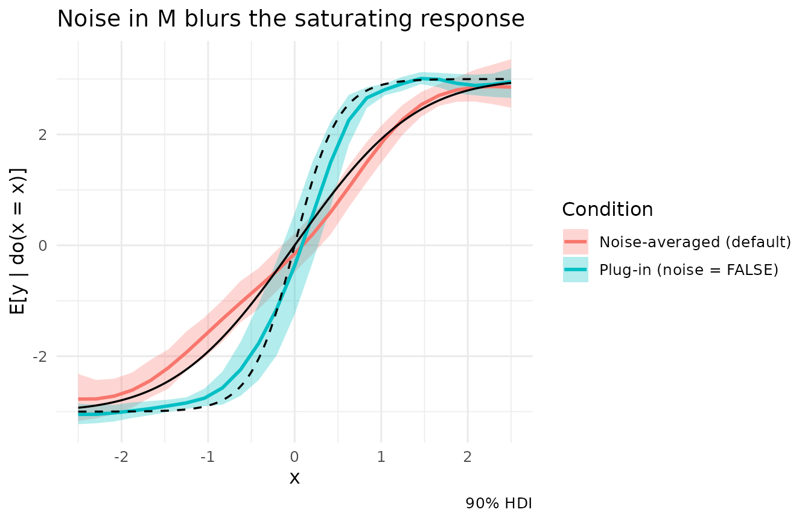

Every node in a structural causal model has two parts: a mechanism (how it responds to its parents) and exogenous noise (everything else that moves it). When Kagu estimates the effect of an intervention, it has to decide what to do with that noise as the intervention ripples through the graph. This vignette covers:
- the mathematics of the choice,
- why the obvious shortcut (ignore the noise) is only exact for linear mechanisms,
- why including the noise does not inflate the uncertainty of an effect,
- comparisons on a very simple graph.
Note: To keep the focus on the demonstration, this vignette skips the full Bayesian workflow of checking priors before fitting and model fit afterwards. With real data you should do both: see
vignette("predictive_checks").
The estimand
Take the simplest graph with a mediator, \(X \to M \to Y\), with additive noise:
\[ M = f(X) + \varepsilon_M, \qquad Y = g(M) + \varepsilon_Y, \qquad \mathbb{E}[\varepsilon_M] = \mathbb{E}[\varepsilon_Y] = 0 . \]
Intervening with \(\mathrm{do}(X = x)\) cuts every arrow into \(X\) and fixes it at \(x\). The noise terms are untouched: each unit keeps its own \(\varepsilon_M\) and \(\varepsilon_Y\). The average causal effect is defined through the interventional mean
\[ \mu(x) \;=\; \mathbb{E}\big[Y \mid \mathrm{do}(X = x)\big] \;=\; \int g\big(f(x) + \varepsilon\big)\, p(\varepsilon_M = \varepsilon)\, d\varepsilon , \]
and the effects Kagu reports are contrasts or derivatives of it: \(\mu(x_1) - \mu(x_0)\), or \(\mu'(x)\).
The target’s own noise \(\varepsilon_Y\) has already dropped out: it is added after \(g\), so its mean of zero passes straight through. The mediator’s noise is different, because it enters inside \(g\).
The plug-in shortcut
The tempting shortcut is to push conditional means through the graph and set every noise term to zero:
\[ \tilde\mu(x) \;=\; g\big(f(x)\big). \]
This is the effect in a world where the exogenous variation has been switched off. It equals \(\mu(x)\) exactly when \(g\) is linear, whatever the distribution of the noise:
\[ g(m) = a + b\,m \;\Rightarrow\; \mathbb{E}\big[a + b\,(f(x) + \varepsilon_M)\big] = a + b\,f(x) = \tilde\mu(x). \]
Once \(g\) curves, the two differ. This is Jensen’s inequality, and a second-order Taylor expansion shows the size of the gap:
\[ \mu(x) \;\approx\; g\big(f(x)\big) + \tfrac12\, g''\big(f(x)\big)\,\sigma_M^2 . \]
The bias grows with the curvature of the downstream mechanism and with the variance of the noise feeding it. Two worked cases:
- Exponential, \(g(m) = e^{m}\) with Gaussian noise: \(\mu(x) = e^{f(x) + \sigma_M^2 / 2}\), so every effect is inflated by a factor \(e^{\sigma_M^2/2}\) relative to the plug-in.
- Saturating, \(g(m) = \tanh(m)\): \(\mu\) is \(g\) convolved with the noise density, \(\mu(x) = (g * p_{\varepsilon_M})(f(x))\). The noise blurs the threshold, so the true dose-response is shallower than the plug-in near the threshold and less flat in the tails.
The question is never whether the noise is Gaussian. Gaussian noise feeding a non-linear mechanism still produces a gap, and non-Gaussian noise feeding a linear one produces none. Non-linearity downstream of a noisy node is the whole story. Non-Gaussian outcome families matter only because their link functions are one such non-linearity.
Kagu models every mechanism as a Gaussian process, so curvature is learned from the data rather than ruled out. That is why it averages over the noise by default.
Noise without inflated uncertainty
A natural worry is that carrying the noise through the graph inflates the uncertainty, with nuisance variation compounding along long paths. That is true for one quantity and false for another, and the distinction matters.
Let \(\theta\) be one posterior draw: one set of mechanism functions and noise scales. For that draw the model defines a full distribution of outcomes under the intervention, \(p_\theta(Y \mid \mathrm{do}(x))\). Two different summaries of it can be reported:
- A sample from it. Draw the noise once and push it through. Across posterior draws this gives the posterior predictive distribution of one unit’s outcome. It contains every nuisance term, and it does widen along long paths. It answers “what might this individual’s outcome be?”
- Its mean, \(\mu_\theta(x) = \mathbb{E}_\theta[Y \mid \mathrm{do}(x)]\). This is a single number per draw. The noise has been integrated out, not carried along. Across draws, its spread reflects only epistemic uncertainty: what we do not know about the mechanisms.
An average causal effect is built from quantity 2. In regression terms this is the difference between a prediction interval and a confidence interval for the mean.
When no closed form exists, Kagu computes \(\mu_\theta\) by Monte Carlo. The observed rows are treated as the population: every row is a unit, and for each posterior draw Kagu propagates all of them and averages:
\[ \hat\mu_\theta(x) \;=\; \frac{1}{K} \sum_{k=1}^{K} g_\theta\big(f_\theta(x) + \sigma_{M,\theta}\, z_k\big). \]
Three details keep the Monte Carlo error negligible next to the posterior spread:
- Common random numbers. The same units \(z_1, \dots, z_K\) are reused for both arms of a contrast and for every point of a sweep, so their errors largely cancel in \(\hat\mu_\theta(x_1) - \hat\mu_\theta(x_0)\). A contrast of \(x\) with itself is exactly zero, and gradients are stable.
- Stratification. The \(z_k\) are stratified normal quantiles, one per equal-probability stratum, so a handful of units already covers the noise distribution evenly. Strata are paired at random across nodes, as in a Latin hypercube.
-
Root nodes carry no mechanism. Each unit keeps its
observed values, so the average is over exactly the population in the
data and adds no sampling noise. If there are fewer rows than
n_mcand a noisy node lies on the path, the rows are replicated, each copy with its own noise, until there aren_mcunits.
The posterior over the effect is therefore \(\{\hat\mu_\theta(x_1) - \hat\mu_\theta(x_0)\}\) over draws \(\theta\). Its width does not grow with path length.
Example 1: a linear chain
When every mechanism is linear the two approaches must agree.
n <- 200
x <- rnorm(n)
m <- 2.0 * x + rnorm(n, sd = 1)
y <- -1.5 * m + rnorm(n, sd = 0.5)
lin <- data.frame(x, m, y)
dag <- list(x = c(), m = "x", y = "m")
mod_lin <- KaguModel$new(dag)
mod_lin$fit(lin)The true effect of a unit change in \(x\) is \(2.0 \times -1.5 = -3\).
rbind(
mod_lin$effects("x", "y", values = c(0, 1))$summary(), # noise-averaged (default)
mod_lin$effects("x", "y", values = c(0, 1), noise = FALSE)$summary() # plug-in
)
#> # A tibble: 2 × 8
#> source target from to mean sd hdi_lower hdi_upper
#> <chr> <chr> <dbl> <dbl> <dbl> <dbl> <dbl> <dbl>
#> 1 x y 0 1 -2.81 0.129 -3.01 -2.60
#> 2 x y 0 1 -2.80 0.130 -3.01 -2.59The two rows match: no curvature means no Jensen gap.
Example 2: a saturating mechanism
Now keep the same graph but make \(Y\) saturate in \(M\), a common shape for dose-responses, thresholds and bounded outcomes:
\[ M = X + \varepsilon_M, \quad \varepsilon_M \sim N(0, 1); \qquad Y = 3 \tanh(2M) + \varepsilon_Y, \quad \varepsilon_Y \sim N(0, 0.2^2). \]
set.seed(1)
x <- rnorm(n)
m <- x + rnorm(n, sd = 1)
y <- 3 * tanh(2 * m) + rnorm(n, sd = 0.2)
sat <- data.frame(x, m, y)
mod_sat <- KaguModel$new(dag)
mod_sat$fit(sat)Because we simulated the data, we know both curves. The interventional mean averages \(g\) over the mediator’s noise; the plug-in ignores it:
z <- qnorm(ppoints(20000)) # integrates over N(0, 1) noise
true_mean <- function(x) vapply(x, function(xi) mean(3 * tanh(2 * (xi + z))), numeric(1))
plug_in <- function(x) 3 * tanh(2 * x)
c(interventional = true_mean(1) - true_mean(0), plug_in = plug_in(1) - plug_in(0))
#> interventional plug_in
#> 1.916855 2.892083The two estimands differ by about 50%. Kagu’s estimates:
eff_avg <- mod_sat$effects("x", "y", values = c(0, 1))
eff_plug <- mod_sat$effects("x", "y", values = c(0, 1), noise = FALSE)
rbind(eff_avg$summary(), eff_plug$summary())
#> # A tibble: 2 × 8
#> source target from to mean sd hdi_lower hdi_upper
#> <chr> <chr> <dbl> <dbl> <dbl> <dbl> <dbl> <dbl>
#> 1 x y 0 1 2.00 0.274 1.51 2.41
#> 2 x y 0 1 3.16 0.561 2.19 3.98The noise-averaged default is close to the true interventional effect, which sits inside its interval. The plug-in is aimed at a different number: it estimates the noise-free contrast, about 50% larger. Neither is exact, because a stationary GP fitted to 200 points rounds off the sharp step in \(\tanh(2m)\), and that error affects both modes alike.
The default’s interval is also narrower than the plug-in’s. The plug-in evaluates each function draw only at \(f(0)\) and \(f(1)\), on the steep middle of \(\tanh\), where the GP’s draws disagree most. Averaging over the noise spreads each draw across the whole curve, which smooths out that disagreement.
The difference is clearest across the whole dose-response. Each sweep curve shows the posterior mean and 90% HDI of \(\mathbb{E}[Y \mid \mathrm{do}(X = x)]\), with the true interventional mean (solid) and the noise-free curve (dashed) overlaid:
sw_avg <- mod_sat$effects("x", "y", sweep = TRUE, sweep_n = 25, sweep_range = c(-2.5, 2.5))
sw_plug <- mod_sat$effects("x", "y", sweep = TRUE, sweep_n = 25, sweep_range = c(-2.5, 2.5),
noise = FALSE)
grid <- seq(-2.5, 2.5, length.out = 200)
truth <- data.frame(x = grid, interventional = true_mean(grid), plug_in = plug_in(grid))
sw_avg$plot(compare = list("Plug-in (noise = FALSE)" = sw_plug),
base_label = "Noise-averaged (default)") +
geom_line(data = truth, aes(x = x, y = interventional), inherit.aes = FALSE,
linewidth = 0.6) +
geom_line(data = truth, aes(x = x, y = plug_in), inherit.aes = FALSE,
linewidth = 0.6, linetype = "dashed") +
labs(title = "Noise in M blurs the saturating response")
The plug-in sweep follows \(3\tanh(2x)\), a steep switch. Real units do not behave that way: at \(\mathrm{do}(X = 0)\) half of them already sit well above the threshold because of \(\varepsilon_M\). The noise-averaged sweep tracks the true, gentler interventional curve.
Example 3: a root node that modifies the effect
Root nodes raise the same question. Under the plug-in, a root that is not intervened on is fixed at its mean. If the effect depends on that root non-linearly, “the effect for an average unit” and “the average effect” come apart.
Here \(Z\) is a root, and the effect of \(X\) on \(Y\) scales with \(Z^2\):
\[ Y = X \cdot Z^2 + \varepsilon_Y, \qquad X, Z \sim N(0, 1). \]
Each unit’s effect is \(Z^2\), so the average effect is \(\mathbb{E}[Z^2] = 1\). The unit at the mean of \(Z\) (that is, \(Z = 0\)) has no effect at all.
xx <- rnorm(n)
zz <- rnorm(n)
yy <- xx * zz^2 + rnorm(n, sd = 0.3)
mod_root <- KaguModel$new(list(x = c(), z = c(), y = c("x", "z")))
mod_root$fit(data.frame(x = xx, z = zz, y = yy))
rbind(
mod_root$effects("x", "y", values = c(0, 1))$summary(),
mod_root$effects("x", "y", values = c(0, 1), noise = FALSE)$summary()
)
#> # A tibble: 2 × 8
#> source target from to mean sd hdi_lower hdi_upper
#> <chr> <chr> <dbl> <dbl> <dbl> <dbl> <dbl> <dbl>
#> 1 x y 0 1 0.866 0.0421 0.790 0.924
#> 2 x y 0 1 -0.0166 0.0527 -0.104 0.0647
mean(zz^2) # the true average effect in this observed population
#> [1] 0.8993912The default averages over the observed population of \(Z\) and recovers its average effect, the
sample mean of \(Z^2\) printed last
(close to 1, the average in an infinite population). The plug-in reports
the effect for a unit at \(Z = \bar z \approx
0\), which is close to zero. Both are legitimate quantities, but
only the first is the average treatment effect. When you want the effect
at a particular value of a root, ask for it explicitly with
conditions:
mod_root$effects("x", "y", values = c(0, 1), conditions = list(z = 0))$summary()
#> # A tibble: 1 × 8
#> source target from to mean sd hdi_lower hdi_upper
#> <chr> <chr> <dbl> <dbl> <dbl> <dbl> <dbl> <dbl>
#> 1 x y 0 1 -0.0219 0.0518 -0.105 0.0611
mod_root$effects("x", "y", values = c(0, 1), conditions = list(z = 1.5))$summary()
#> # A tibble: 1 × 8
#> source target from to mean sd hdi_lower hdi_upper
#> <chr> <chr> <dbl> <dbl> <dbl> <dbl> <dbl> <dbl>
#> 1 x y 0 1 2.31 0.0749 2.19 2.44Monte Carlo accuracy
Roots add no Monte Carlo error, because every observed row is used.
The only Monte Carlo error comes from the noise of non-root nodes, and
stratification keeps that small. n_mc is the minimum number
of units per draw: with 200 rows the default of 50 leaves them as they
are, and asking for 1000 replicates each row five times with fresh
noise. Nothing changes:
do.call(rbind, lapply(c(50, 1000), function(k) {
s <- mod_sat$effects("x", "y", values = c(0, 1), n_mc = k)$summary()
data.frame(n_mc = k, mean = s$mean, sd = s$sd)
}))
#> n_mc mean sd
#> 1 50 1.992778 0.2744895
#> 2 1000 1.992762 0.2794440With very few rows, or many noisy nodes feeding strongly non-linear
mechanisms, check that sd does not fall as
n_mc grows, and increase it until it settles.
Which should you use?
noise = TRUE (default) |
noise = FALSE |
|
|---|---|---|
| Estimand | \(\mathbb{E}[Y \mid \mathrm{do}(x)]\), the interventional mean | \(g(f(x))\), the response with noise switched off |
| Root nodes | averaged over the observed rows (the data are the population) | fixed at their mean |
| Equal when | always the target | every downstream mechanism is linear |
| Uncertainty | epistemic only | epistemic only |
| Cost | up to one mechanism evaluation per row per draw | cheapest |
Use the default for average causal effects.
noise = FALSE is useful for fast exploratory sweeps. It is
also useful when the noise-free mechanism is itself the quantity of
interest, for example a physical response curve measured with instrument
error. Either way the effect’s uncertainty describes what we do not know
about the mechanisms, never the scatter between individual units.